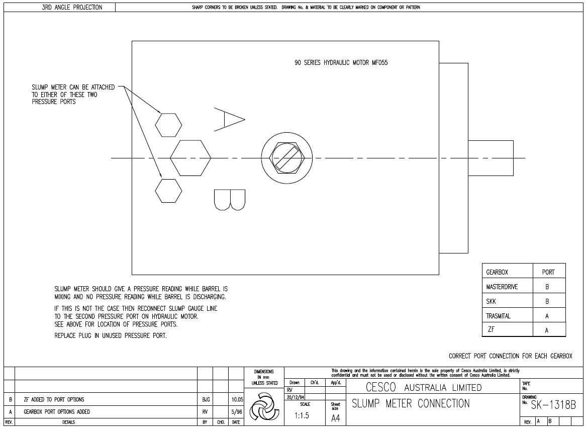

Source: CHAPTER 8 - OPTIONS.docx — Cesco Truck Mounting Instructions, Oct 2026 set. Read status: text ok; 1 embedded image.
Options list 1–6 incl. new Deadman Valve; water meter mounting (100 mm straight run, 19–22 mm ID, vertical calibration); slump meter per SK-1318(B) gearbox port table; powered chute jack hose completion; top hose tee after water meter. Alloy Bumper listed but no section text.
Options list (as stated)
1 Water Meter · 2 Deadman Valve · 3 Slump Meter · 4 Powered Chute Jack · 5 Top Hose & gun · 6 Alloy Bumper
8.1 Water meter
Normally mounted before delivery. If the mounter mounts/relocates it:
- Straight section of 100 mm on both inlet and outlet sides, internal diameter 19–22 mm.
- Factory calibrated for vertical mounting; other positions need recalibration — contact Cesco Australia Ltd.
- 1/4" mounting holes either side of flow tube housing for bracket mounting.
- Must measure a full line of liquid; valves may be before or after the meter.
Note: always close the lid after use (prevents LCD fading in sunlight; conserves power).
8.2 Deadman valve
Valve in the water line controlling flow from the pressurised water tank; lever must be depressed to maintain flow to the water-gun. Located next to the slump meter on the mixer.
8.3 Slump meter
- Normally mounted & plumbed before delivery. Drawing SK 1318 shows correct motor ports if mounter plumbs it.
- Correct operation: pressure reading while mixing; no reading while discharging. Otherwise swap the slump meter line to the second pressure port on the hydraulic motor; replace plug in unused port.
- Embedded drawing (image, read visually): SK-1318B "SLUMP METER CONNECTION", 90 series hydraulic motor MF055; correct port per gearbox: MASTERDRIVE B, SKK B, TRASMITAL A, ZF A. Rev A gearbox port options added (RV 5/96); Rev B ZF added to port options (BJG 10.05).


8.4 Powered chute jack
- Jack and most plumbing fitted before delivery, except the elbow for connection to the pump and the field-attachable hose end for the hose from control valve to pump.
- Cleanliness paramount. Cut hose to correct length before attaching end fitting.
- Elbow fits to the pump central fitting on the side opposite the main high-pressure hose flange fittings.
8.5 Top hose & gun
Normally factory fitted. Tee for top hose supply always after the water meter so all water added to the bowl is metered.
Alloy bumper
Source gap Listed as option 6; no section text in the file.
Full source text — verbatim from CHAPTER 8 - OPTIONS.docx
Complete text of the source document in source order (spelling as in the source), for checking against the article above. Text boxes and figure positions are marked.
Options.
1 Water Meter
2 Deadman Valve
3 Slump Meter
4 Powered Chute Jack
5 Top Hose & gun
6 Alloy Bumper.
8.1 WATER METER
The water meter will normally be mounted to the mixer prior to delivery. However, if it is necessary for the mounter to mount or relocate the meter, the following should be observed.
a) A straight section of 100mm length should be maintained on both the inlet & outlet flow sides, with an internal diameter of between 19 & 22mm.
b) The meter is factory calibrated to be mounted in the vertical position. If mounting in any other position, recalibration will be necessary. Contact Cesco Australia Ltd for guidance.
c) Mounting holes (1/4”) are supplied on either side of the flow tube housing for mounting to a bracket.
d) The water meter must measure in a full line of liquid. Valves may be fitted before or after the meter.
NOTE :-- Always close the lid after use, to prevent possible LCD fading due to prolonged exposure to direct sunlight, & to conserve power.
8.2 DEADMAN VALVE
The deadman valve is a valve in the water line controlling flow from the pressurised water tank which requires the lever to be depressed to maintain flow to the water-gun. It is located next to the slump meter on the mixer.
8.3 SLUMP METER.
The slump meter will normally be mounted & plumbed prior to delivery. Attached drawing SK 1318 shows the correct motor ports to be used if plumbing by the mounter is necessary.
Correct operation of the meter is,
A pressure reading should be obtained while mixing
No pressure reading should be obtained while discharging.
If this is not the case, then swap the slump meter line to the second pressure port on the hydraulic motor.
Replace plug in unused pressure port.
[Figure: image1.png — shown above]
8.4 POWERED CHUTE JACK.
The chute jack & majority of plumbing will be fitted to the mixer prior to delivery. The exceptions being the elbow for connection to the pump, & the field attachable hose end for the hose which runs from the control valve to the pump.
As with all hydraulic installations, cleanliness is paramount when completing these connections.
The hose length should be adjusted to the correct required length before attaching the end fitting.
The elbow is to be fitted to the pump into the central fitting on the opposite side to the main high pressure hose flange fittings.
8.5 TOP HOSE & GUN.
This option will normally be factory fitted prior to delivery.
The tee for supply to the top hose should always be fitted after the water meter (where fitted) so that all water added to the bowl passes through the meter.